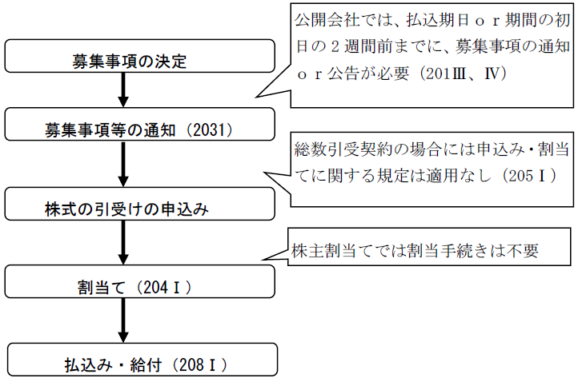

第２編 株式会社
第３章 株式
第１０節 募集株式の発行等
Ⅰ 総説
1. 募集株式の発行等
募集株式の発行等とは、株式会社成立後の新株の発行と、株式会社の処分する自己株式を引き受ける者の募集（自己株式の処分）という2つの概念を含めたものをいう。
なお、自己株式の交付のみである場合には、登記すべき事項は発生しない（発行済株式の総数にも資本金の額にも変更はない）。
2. 通常の新株発行
通常の新株発行とは、株主となる者に新たに払込み（現物出資を含む）をさせて新株を発行する場合で、会社法199条以下の手続に従って発行されるものをいう。
3. 特殊の新株発行
特殊の新株発行とは、通常の新株発行以外の新株発行をいう。
具体的には、取得請求権付株式・取得条項付株式等の取得で新株を対価とする場合、株式分割、株式無償割当て、新株予約権の行使、吸収合併、吸収分割、株式交換等の場合における、会社法199条以下の手続によらない新株発行をいう。
1. 第三者割当てと株主割当て
募集株式の発行等には、第三者割当てと株主割当ての2種類がある。
(1) 第三者割当て
株主に株式の割当てを受ける権利を与えずにする募集株式の発行等のこと。ただし、結果的に株主に割り当てられることとなる場合でも、株主割当て以外の方法による場合にはこちらに含まれる。
ex. 株主Ａ、Ｂ、Ｃが存する場合に、Ａに対してのみ募集株式の申込みの勧誘及び割当てを行う、又は、株主でないＤに募集株式の申込みの勧誘及び割当てを行う。
(2) 株主割当て
株主に持株数に応じて株式の割当てを受ける権利を与えて募集株式の発行等をすること。株主全員が引受けの申込み及び払込み又は給付をすれば各株主の議決権比率は維持される。
ex. 株主Ａが400株、Ｂが200株、Ｃが100株を有している場合に、それぞれに、保有株式2株に1株の株式の割当てを受ける権利を与えて募集株式の発行等をする。
※種類株式発行会社の場合
所有している株式と同種の種類株式を発行しなければ株主割当てとはならない。ただし、一の種類株式のみに対して募集株式の発行等をすることはできる。
2. 取締役等の報酬等として発行する募集株式の発行
金融商品取引所に上場されている株式を発行している株式会社（以下「上場会社」という。）は、取締役または執行役の報酬等として当該株式会社の株式の発行または自己株式の処分をすることができる。この場合、通常の募集株式の発行と異なり、募集株式と引換えにする金銭の払込み等を要しない（会202条の2第1項前段、第3項）。
【募集株式の発行の手続きの流れ】

株式会社は、発行する株式（新株）又は処分する自己株式を引き受ける者の募集をしようとするときは、その都度、次の事項（募集事項）を定めなければならない（会社法199条1項）。

※ ②④は、取締役の報酬等である募集株式の発行の場合には、定めることを要しない(会202条の2第1項前段、第3項)。
また、株式会社は、株主に株式の割当てを受ける権利を与えるとき（株主割当てのとき）は、上記の募集事項に加えて、次の事項も定めなければならない(会社法202条1項)。

Ⅱ 第三者割当ての手続
1. 公開会社
(1) 取締役会の決議
原則：取締役会決議（会社法201条1項、199条2項）
なお、この場合において、市場価格のある株式を引き受ける者の募集をするときは、払込金額に代えて、公正な価額による払込みを実現するために適当な払込金額の決定方法を定めることができる（ブックビルディング方式による払込価額の決定。会社法201条2項）。
ex. 適切な価額を証券会社に決めてもらうことができる。市場価格のある株式は取締役会の決議後に価額が変動するため、決議時に価額を決めるのは適さないので、このような決定方法が採られることがある。
(2) 有利発行の場合
払込金額が募集株式を引き受ける者に特に有利な金額である場合には、募集事項の決定は、株主総会の特別決議による（会社法201条1項、199条2項、199条3項、309条2項5号)。
募集株式の払込金額が募集株式を引き受ける者に特に有利な金額である場合には、取締役は、株主総会において、当該払込金額でその者の募集をすることを必要とする理由を説明しなければならない（会社法199条3項、201条1項参照）。
※株主総会議事録の添付の要否
有利発行では、株主総会の特別決議を得るべきだがが、これを得ずに新株の発行がなされた場合であっても、当該瑕疵は新株発行の無効原因とはされていない（最判昭46.7.16 ）。特別決議を得ているかは株式会社の内部のことであり、新株を取得する者にはわかりにくいからである。
さらに、有利発行があった場合において、その旨の登記の申請がされたとしても、当該新株の発行が有利発行であるか否かの判断を登記官が申請書からすることは困難である。そこで、第三者に対する有利発行であるために、株主総会の決議を要する場合でも、登記の申請の際には、（取締役会議事録を添付すれば）当該株主総会議事録を添付する必要はないものとされている。
2. 非公開会社
(1) 株主総会の決議
原則：株主総会特別決議（会社法199条2項、309条2項5号）
(2) 取締役・取締役会への委任
株主総会においては、特別決議によって、委任すべき募集株式の数の上限及び払込金額の下限を定め、募集事項を以下の機関の決定に委任することができる（会社法200条1項、309条2項5号）。
| 取締役会設置会社 | 取締役会非設置会社 |
| 取締役会の決議 | 取締役の決定(取締役の過半数の一致) |
当該株主総会の決議は、募集株式の払込み等の期日又はその期間の末日が当該決議の日から1年以内の日の募集についてのみ効力を有する（会社法200条3項）。既存株主の利益の保護のためである。
3. 取締役等の報酬等である募集株式の発行
(1) 定款の定めまたは株主総会の決議で定める事項
定款の定め又は株主総会の決議（指名委員会等設置会社にあっては報酬委員会の決定）により、次の事項を定めなければならない（会社法361条1項3号、409条3項3号、会社法施行規則98条の2、111条）。
ア 募集株式の数（種類株式発行会社にあっては、募集株式の種類及び種類ごとの数）の上限（報酬委員会の決定による場合にあっては、当該募集株式の数）
イ 一定の事由が生ずるまで募集株式を他人に譲り渡さないことを取締役等に約させるときは、その旨及び当該一定の事由の概要（報酬委員会の決定による場合にあっては、当該一定の事由）
ウ 一定の事由が生じたことを条件として募集株式を株式会社に無償で譲り渡すことを取締役等に約させるときは、その旨及び当該一定の事由の概要（報酬委員会の決定による場合にあっては、当該一定の事由）
エ イ・ウのほか、取締役等に対して募集株式を割り当てる条件を定めるときは、その条件の概要（報酬委員会の決定による場合にあっては、その条件）
(2) 取締役会の決議で定める事項
取締役等の報酬等である募集株式の発行をする株式会社の取締役会（※）は、株主総会決議等（上記⑴）で定めた範囲で、募集株式の数等の募集事項を定める（会社法202条の2第1項）。この場合、募集株式の払込金額又はその算定方法及び募集株式と引換えにする金銭の払込み等の期日又は期間を定めることを要しない(会社法202条の2第1項前段、第3項)。
また、以下の事項を定めなければならない（会社法202条の2第3項、第1項）。
ⅰ 取締役の報酬等として発行する募集株式について、引換えにする払込み又は給付を要しない旨（会社法202条の2第1項1号）
ⅱ 募集株式の割当日（会社法202条の2第1項2号）
→ 引受人は割当日に株主となるため、定める必要がある（会社法209条4項）。
(3) 有利発行の適用の有無
取締役の報酬等である募集株式の発行をする場合、募集株式の払込金額又はその算定方法を定めないため、有利発行に該当する場合の株主総会特別決議も要しない（会201条1項、199条2項、3項、309条2項5号）。
【第三者割当ての原則決議】
| 公開会社 | 非公開会社 | ||
| 第三者割当て | 通常発行 | 取締役会の決議 | 株主総会の特別決議 |
| 有利発行 | 株主総会の特別決議 | ||
4. その他の手続
(1) 種類株主総会の決議
種類株式発行会社において、募集株式の種類が譲渡制限株式であるときは、募集事項の決定又はその委任は、以下のいずれかに該当する場合を除き、当該種類株主総会の特別決議がなければ、その効力を生じない（会社法199条4項、200条4項、324条2項2号）。
①当該種類株式の種類株主による種類株主総会の決議を要しない旨の定款の定めがある場合
②当該種類株主総会において議決権を行使することができる株主が存しない場合
これは、譲渡制限付株式の株主の持株比率に影響があるからである。
(2) 有利発行の場合の取締役の説明義務
有利発行に当たる場合には、取締役は、募集株式の決定又はその委任を決議する株主総会において、当該払込金額で募集することを必要とする理由を説明しなければならない（会社法199条3項、200条2項）。
1. 募集事項等の通知
株式会社は、募集株式の引受けの申込みをしようとする者に対し、次の事項を通知しなければならない（会社法203条1項）。

株式会社が申込者に対してする通知は、申込者が株式会社に交付した書面に記載された住所に対して発すれば足り、この通知は、通常到達すべき時に到達したものとみなされる（会社法203条6項、7項）。
2. 申込み
募集株式の引受けの申込みをしようとする者は、申込みをする者の氏名又は名称及び住所並びに引き受けようとする募集株式の数を記載した書面を株式会社に提出（又は電磁的方法により提供）しなければならない（会社法203条2項、3項）。
取締役等の報酬等である募集株式の発行の場合には、当該報酬を受ける取締役等以外の者は申込み・総数引受契約をすることはできない（会社法205条3項）。
3. 割当て
(1) 募集株式の割当自由の原則
第三者割当てをする場合、株式会社は、申込者の中から募集株式の割当てを受ける者を定め、かつ、その者に割り当てる募集株式の数を定めなければならない。この場合において、株式会社は、申込者に割り当てる募集株式の数を、申込者が株式会社に交付した書面に記載された「引き受けようとする募集株式の数」よりも減少することができる（会社法204条1項）。
(2) 募集株式の割当ての決定機関
募集株式が譲渡制限株式である場合には、募集株式の割当ての決定は、定款に別段の定め（ex. 取締役会設置会社において株主総会の決議による）がある場合を除き、以下の決議による必要がある（会社法204条2項、309条2項5号)。第三者が譲渡制限株式の株主になるため、慎重にその是非を判断する必要があるからである。
| 取締役会設置会社 | 取締役会非設置会社 |
| 取締役会の決議 | 株主総会（特別決議） |
募集株式が譲渡制限株式でない場合には、上記の決議による必要はないため、例えば、代表取締役が募集株式の割当てを行っても構わない。
取締役等の報酬等として発行する場合も、定款に別段の定めがある場合を除き、取締役会の承認を要する。
(3) 募集株式の割当ての通知
株式会社は、募集株式の払込期日又は期間の初日の前日までに、申込者に対し、その割当てを受ける募集株式の数を通知しなければならない（会社法204条3項）。
4. 総数の引受けを行う契約を締結する場合の特則
募集株式を引き受けようとする者がその総数の引受けを行う契約を締結する場合には、上記の申込み及び割当てに関する規定は適用されない（会社法205条1項）。総数の引受けとは、特定人が株式会社との契約によって募集株式の総数を包括的に引き受ける方式をいう。
総数の引受けを行う契約は、引き受ける者が複数であっても、契約書が2通以上となる場合であっても可能である。
※募集株式が譲渡制限株式である場合
募集株式が譲渡制限株式であるときは、定款に別段の定めがある場合を除き、以下の機関の承認を受けなければならない（会社法205条2項）。
| 取締役会設置会社 | 取締役会非設置会社 |
| 取締役会の決議 | 株主総会（特別決議） |
募集株式が譲渡制限株式であるときの割当ての決定と同様の趣旨である。
取締役等の報酬等として発行する場合も、定款に別段の定めがある場合を除き、取締役会の承認を要する。
5. 払込み・給付
募集株式の引受人は、払込期日又は払込期間内に（会社法199条1項4号）、株式会社が定めた銀行等の払込みの取扱い場所において、それぞれの募集株式の払込金額の全額を払い込まなければならない（会社法208条1項）。
現物出資の場合には、募集株式の引受人は払込期日又は払込期間内に（会社法199条1項4号）、それぞれの払込金額の全額に相当する現物出資財産を給付しなければならない（会社法208条2項）。
なお、取締役の報酬等として発行する募集株式については、払込み又は給付を要しない（会社法202条の2第1項1号）。
1. 募集事項の株主への通知又は公告
(1) 原則
払込期日又は払込期間の初日の2週間前までに、株主に対し、当該募集事項を通知又は公告しなければならない（会社法201条3項、4項）。
募集株式の発行が法令若しくは定款に違反する場合又は著しく不公正な方法により行われる場合において、株主が不利益を受けるおそれがあるときは、株主は、株式会社に対し、募集株式の発行の差止めを請求することができる（会社法210条）。この点、公開会社においては、募集株式の発行は取締役会の決議によってすることができるところ、株主が関知しない間に当該手続が行われると、株主が募集株式の発行の差止請求をする機会を逸してしまうおそれがある。このような不利益を防止するために、株主に対する募集事項の通知・公告が義務づけられているのである。
※この通知又は公告をした場合に、通知又は公告をしたことを証する書面は、添付書面とならない。
※非公開会社の場合
非公開会社が第三者割当ての方法により募集株式の発行等を行う場合には、募集事項等の決定は株主総会の特別決議を必ず経るため（会社法199条2項、200条1項、309条2項5号）、株主に対して募集事項の通知又は公告をする必要はない。
(2) 例外
①株式会社が、払込期日又は払込期間の初日の2週間前までに、有価証券届出書、発行登録書等、会社法施行規則40条各号に定める書類の届出又は提出をしている場合には、上記の株主への通知・公告は不要である（会社法201条5項）。
この場合には、金融商品取引法に基づいてすでに公開されているため、通知又は公告を不要としても株主の保護に欠けるおそれはないからである。
②募集事項の決定の日から払込期日又は払込期間の初日までの間に2週間を置かない場合でも、通知又は公告の期間短縮に関する株主全員の同意があれば適法である。
2. 支配株主の異動を伴う募集株式の発行等（公開会社における募集株式の割当て等の特則）
(1) 趣旨
公開会社においては、取締役会の決議により、募集株式の発行等をすることができるため、特定の者に対して株式を割り当てることにより支配株主を創設することができてしまい、既存の株主の利益が害されるおそれがあった。そこで、平成26年の改正でこの規定が創設された。
(2) 要件

「募集株式の引受人が株主となった場合のその議決権の数」が、「募集株式の引受人の全員が株主となった場合における株式発行後の総株主の議決権の数」の2分の1を超えるときに、(3)の手続が必要となる（会社法206条の2第1項）。会社法は、取締役会決議による機動的な資金調達を可能としており、その趣旨を没却することのないように配慮して、「原則的に株主総会決議を要する」との規律を回避したものである。
具体例
発行可能株式総数4000株、発行済株式総数1200株である株式会社において、株主Ａに新たに1000株を発行する場合
| 株主Ａの現在の保有株式数 | 発行後の株主Ａの保有株式数 | 対象となるか |
| 100株/1200株中 | 1100株/2200株中 | × ※1 |
| 200株/1200株中 | 1200株/2200株中 | ○ |
| 1100株/1200株中 | 2100株/2200株中 | × ※2 |
※1 議決権の過半数を有することにならないため（会社法206条の2第1項本文）。
※2 発行前から過半数を有しているため（会社法206条の2第1項本文）。
(3) 必要となる手続
①株主への周知
払込期日又は払込期間の初日の2週間前までに株主に対し、引受人の氏名等を通知又は公告しなければならない（会社法206条の2第1項、2項）。
※金融商品取引法4条の1項から3項までの届出をしている場合その他法務省令で定める場合には、通知等は不要となる（会社法206条の2第3項）。
②株主が反対した場合
ⅰ 原則
総株主の議決権の10分の1以上の議決権を有する株主が、通知等の日から2週間以内に反対する旨の通知をした場合には、当該公開会社は、募集株式の割当て及び総数引受契約の承認について、株主総会の普通決議を要する（会社法206条の2第4項本文）。
※定足数の緩和
上記株主総会決議は、議決権を行使することができる株主の議決権の過半数（3分の1以上の割合を定款で定めた場合にあっては、その割合以上）を有する株主が出席し、出席した当該株主の議決権の過半数（これを上回る割合を定款で定めた場合にあっては、その割合以上）をもって行わなければならない（会社法206条の2第5項）。
この決議は、会社経営の支配権者を決定するという点において、取締役の選任決議と類似するため、決議要件を取締役の選任の規定（会社法341条）と同様としたものである。
ⅱ 例外
当該公開会社の事業の継続のため緊急の必要がある場合には、株主総会の決議を要しない（会社法206条の2第4項ただし書）。
ex. 株主総会を開いていては、資金がショートしてしまう場合。
会社の財産状況が悪化している場合、迅速な資金調達の必要性が高いからである。